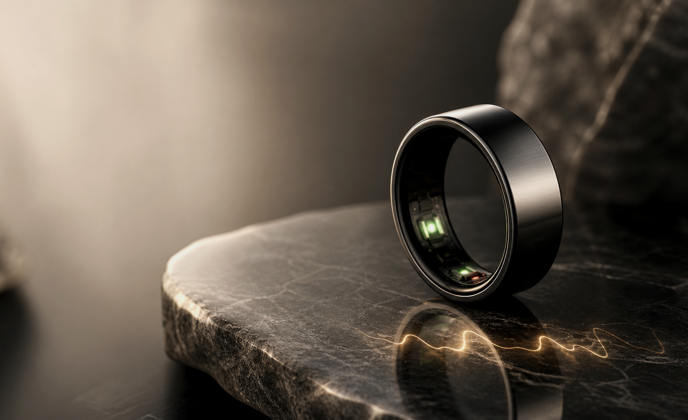
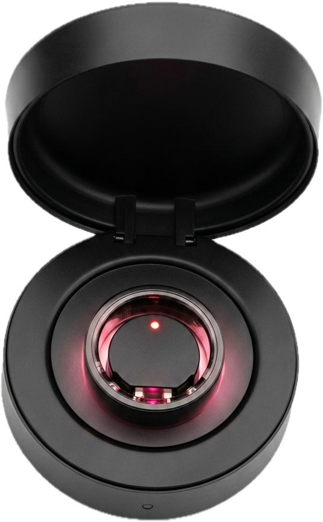
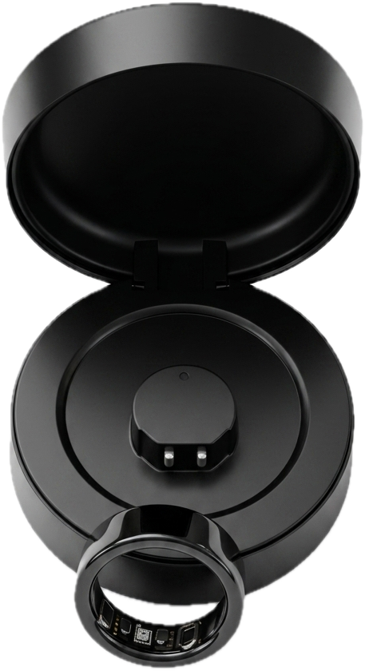

Smart ring premium
Votre santé,
lisible dans un geste.
Vitarinq suit sommeil, récupération, rythme cardiaque, oxygène sanguin et activité dans une bague noire polie conçue pour disparaître au doigt et révéler ce qui compte.
Jusqu'à 7 jours de batterie
Dock portable en métal premium avec batterie intégrée
Application premium sans abonnement
Titane noir poli
Capteurs internes visibles
Dock circulaire magnétique
24/7
Mesure passive
2.5 g
Profil ultra léger
Titane
Matériau
50 m
Étanche · 5 ATM
Expérience
Un bijou qui travaille en silence.
L'app transforme les signaux bruts en décisions simples: dormir plus tôt, réduire l'intensité, reprendre l'entraînement ou comprendre une semaine difficile.

Votre journée
Des insights au bon moment.
07:12
Réveil
Score de sommeil et readiness pour décider si la journée doit être intense ou légère.
Readiness 82 · Sommeil 7 h 21
13:40
Journée active
Fréquence cardiaque, pas et temps actif se mettent à jour sans ouvrir l'application.
72 bpm · 9 240 pas
22:18
Retour au calme
Une recommandation simple pour préserver votre récupération avant la prochaine nuit.
Couvre-feu conseillé · 23:30
Capteurs
Des signaux utiles, pas du bruit.
Vitarinq combine PPG multi-longueurs d'onde, accéléromètre 3 axes et un ECG échantillonné à 500 Hz pour produire une vue continue de votre physiologie — jusqu'à l'analyse fine du rythme nocturne (diagramme de Lorenz, mesuré entre 0 h et 6 h).
HRV
45ms
équilibre nerveux
Sommeil
6h05
Très bon
Stress
20
Détente
SpO₂
97%
Normal
Sommeil
Votre nuit, décodée par stades.
Réveils, sommeil paradoxal, léger et profond : Vitarinq reconstitue l'architecture complète de votre nuit et la traduit en un score de qualité clair, chaque matin.
8h 08
de sommeil
Qualité de la nuit
Très bon
Long sommeil
8h 08m
00:27nuit du 31 mai08:35
- Réveillé 0% 0 m
- Sommeil paradoxal 5% 26 m
- Léger 59% 4 h 47 m
- Profond 36% 2 h 55 m
Tendance · moyenne
7h 53m
▲ +11 min cette semaine
Application
Une lecture claire, inspirée de vos vrais écrans santé.
L'interface Vitarinq met les indicateurs clés en cartes rapides: sommeil, fréquence cardiaque, HRV, SpO2, stress, activité et micro-examen. Les données sensibles restent lisibles sans transformer l'app en tableau clinique.
Synchronisation avec Apple Santé et Google Health Connect.
Santé
6896
/8000
- Calories 369.3kcal
- Distance 6.00km
- Sommeil total 6h 5m
Enregistrement sportif
Activité récente
Durée
133min
Distance
5.44km
Calories
334.9kcal
Entraînement via l'application
Entraînement sur l'appareil
Capteurs visibles, expérience invisible.
Le rendu reprend la bague noire brillante, les fenêtres capteurs internes et le dock rond ouvert. Les accents turquoise, orange et violet viennent directement des écrans d'app pour garder une identité cohérente entre produit et logiciel.
Design
Premium au poignet? Non. Au doigt.
Titane microbillé
Finition graphite, argent ou champagne avec intérieur hypoallergénique poli miroir.
Charge compacte
Un boîtier rond en aluminium, stable et compact : recharge complète en ~1 heure pour reposer la bague sans effort chaque semaine.
7 jours d'autonomie
Jusqu'à 7 jours sur une seule charge: portez la bague en continu, sans souci de batterie.
App claire
Insights quotidiens, historique, exports, mises à jour sans fil (OTA) et mode privé pour garder la main sur vos données.
Boîtier de recharge
La recharge, posée et oubliée.
Un boîtier rond compact à clapet, stable sur le bureau ou en voyage. Déposez la bague sur le dock magnétique auto-centré : une charge complète en ~1 heure couvre une semaine d'autonomie.
- Témoin de charge intégré
- Charge complète en ~1 h
- Dock circulaire magnétique

Spécifications
La fiche technique, sans le jargon.
Tout ce qui tient dans un anneau de quelques grammes : capteurs de précision, autonomie d'une semaine et une vraie résistance à l'eau.
Matériaux & finition
- Surface extérieure
- Alliage de titane
- Structure interne
- Résine époxy, intérieur hypoallergénique
- Finitions
- Noir graphite · Argent · Champagne
Santé avancée
- ECG
- Échantillonnage 500 Hz
- Stress (EDA)
- Activité électrodermale
- FC + HRV · SpO₂
- Récupération & oxygène
- Analyse nocturne
- Diagramme de Lorenz · 0 h–6 h
Capteurs
- Optique
- Double PPG multi-longueurs d'onde
- Mouvement
- Accéléromètre 3 axes
- Processeur
- Puce dédiée basse consommation
Autonomie & charge
- Autonomie
- 4 à 7 jours
- Recharge complète
- ~1 heure (0 → 100 %)
- Boîtier de charge
- Aluminium · USB
- Mises à jour
- Sans fil (OTA)
Résistance
- Étanchéité
- 5 ATM + IP68
- Profondeur
- Jusqu'à ~50 m
- Au quotidien
- Douche, mains, natation
Connectivité & app
- Connexion
- Bluetooth Low Energy
- Compatibilité
- iOS 13+ · Android 8+
- Langues de l'app
- 36 langues, dont le français
- Synchronisation
- Apple Santé · Health Connect
Dans la boîte
Bague connectée · boîtier de recharge · câble USB · manuel d'utilisation · certificat de contrôle qualité.
Les estimations de pression artérielle, glycémie et composition sanguine sont fournies à titre purement indicatif et ne remplacent pas un dispositif médical homologué.
Lancement
Founders edition
Une première série limitée pour valider le produit, construire la communauté et livrer les premiers exemplaires avec un support direct de l'équipe.

Précommande
CHF 249
Prix indicatif early access.
- Bague Vitarinq en titane
- Chargeur magnétique USB-C métallique
- App iOS/Android
- Sans abonnement
Questions
Ce qu'il faut savoir.
Est-ce un dispositif médical?
Non. Vitarinq est pensé comme un produit bien-être et performance, pas comme un outil de diagnostic.
Quand peut-on livrer?
La demande est très forte et les premières séries partent vite. Les livraisons se font selon le stock disponible, dans l'ordre des précommandes. Réservez tôt pour ne pas manquer le prochain lot.
Pourquoi une bague plutôt qu'une montre?
La bague est plus discrète, plus confortable la nuit et mieux placée pour certaines mesures passives.
Compatible avec mon téléphone?
Oui, en Bluetooth Low Energy avec iOS 13+ et Android 8+. À noter : HarmonyOS 5.0 et HarmonyOS « pur » ne sont pas encore pris en charge (uniquement les versions antérieures à 5.0).
Puis-je la porter sous la douche ou en nageant?
Oui. Avec une étanchéité 5 ATM + IP68 (~50 m), vous pouvez la garder pour vous laver les mains, prendre une douche ou nager.